Concepto
Subnautica es un juego de supervivencia, aventura y terror ambientado en un mundo abierto y jugado desde una perspectiva en primera persona.El objetivo principal del jugador es explorar el mundo del juego y sobrevivir a los peligros del planeta, mientras que al mismo tiempo sigue la historia del juego. Subnautica le permite al jugador recolectar recursos, construir herramientas, bases e interactuar con la vida salvaje del planeta. En la dificultad básica, "Supervivencia", el jugador deberá mantener la nutrición, la hidratación y el oxígeno. El juego incluye un ciclo diurno y nocturno que afecta la jugabilidad y el entorno. El juego incluye otros tres modos: "Modo libre", en donde el hambre y la sed están deshabilitados; "Modo Extremo", que es lo mismo que Supervivencia, excepto que si el jugador muere, el jugador ya no podrá reaparecer en la partida, teniendo que iniciar otra nueva; y "Modo creativo", en el que las características de hambre, sed, salud, oxígeno e história están deshabilitadas, todos los planos de elaboración se adquieren, donde no se necesitan recursos para fabricar y los sumergibles no necesitan energía y no se pueden dañar. El juego se desarrolla principalmente bajo el agua, con dos islas explorables.
Historia
Repara la radio: lo primero es restablecer las comunicaciones.
Encuentra la Cápsula 3: parece que hay más supervivientes en la zona.
Encuentra la Cápsula 17: otra llamada de socorro. ¿Encontraremos a alguien esta vez?
Encuentra la Cápsula 19: una Cápsula de salvamento más nos ha enviado una señal de socorro.
Encuentra las Cuevas de Gelasetas: seguimos el rastro de la tripulación de la Degasi.
Encuentra el Gran Arrecife Profundo: parece que los tripulantes de la Degasi llegaron hasta una profundidad increíble.
Encuentra la Plataforma de Ejecución: es hora de averiguar qué es lo que atacó a la Sunbeam.
Explora la Aurora: parece que en nuestra nave hay algo que nos podría ayudar a escapar... y tenemos que reparar los motores para evitar un evento apocalíptico.
Encuentra el Centro de Investigación de Enfermedades: es posible que aquí descubramos qué nos pasa.
Encuentra la Central Térmica: llegamos al fondo del cráter. ¿O hay algo aún más hondo?
Encuentra la Instalación de Contención Principal: tendremos que liberar a lo que los Precursores ocultaron en lo más profundo del cráter.
Escapa del planeta: ahora que la Plataforma de Ejecución está desactivada, es la hora de huir.
Biomas
Bajíos
Aguas seguras es uno de los biomas más seguros del juego, ya que los únicos enemigos que nos podemos encontrar son algunos Acechantes, así como algunos peces crash. Contiene numerosos tubos de coral, así como un sistema de pequeñas cuevas. También abundan en este sistema todos los recursos necesarios para comenzar, así como muchos peces comestibles. Aunque los minerales más abundantes serán cobre, titanio y cuarzo, en sus cuevas también nos encontraremos con algunos minerales no tan propios, como plata, plomo u oro.
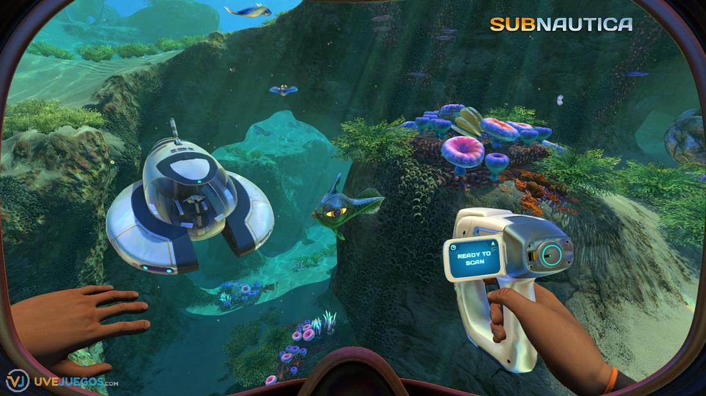Bosque de algas
El Bosque de Enredaderas se identifica fácilmente por las múltiples algas de enredadera que hay por todas partes. Es un lugar bastante pacífico, debido a las múltiples forma de vida pasivas. Las dos únicas formas de vida agresivas son ocasionalmente los Bleeders y los Acechantes, en los que, en su artículo, podéis ver algunas formas que existen para domesticarlos. Justamente por eso decíamos que era dinámico: los gasópodos nos tirarán gas si algún animal está cerca, los stalkers mordiendo la chatarra y sobre todo, comiendo mirones, cuando pierden un diente se oirá un rugido... Múltiples detalles que le dan vida a este bioma.
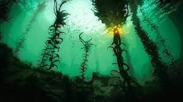Mesetas de hierba
Las mesetas de hierba cubren bastante parte del mapa, y uno de los primeros que nos encontraremos al empezar Subnáutica. Nos encontraremos con grandes extensiones de hierba sangrienta, solo interrumpido por estructuras en forma de pilar. Se recomienda tener cuidado con los tiburones de arena, así como con posibles grupos de mordedores. Estas zonas (son cuatro) cuentan con varios trozos de la Aurora, así como varias cápsulas salvavidas destrozadas. Hay bastante diversidad de recursos, aunque en este bioma no nos encontraremos con materiales demasiado complicados de conseguir.
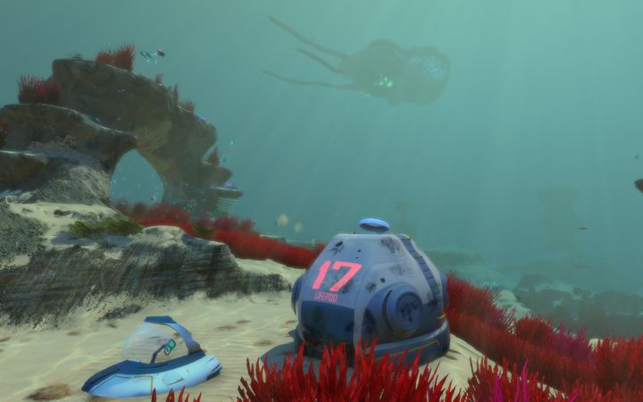Gran Arrecife
El Gran Arrecife es un bioma repleto de fauna, y también uno de los más peligrosos. Será habitual encontrarnos Curvadores y caminantes marinos, que se añaden a dos grandes Leviatanes fantasmas. En el Gran Arrecife existe una conexión casi siempre con el Gran Arrecife Profundo, con el problema de que nos podremos encontrar Crustápodos con facilidad. Además, también podremos encontrarnos otras criaturas menos agresivas como la Gelarraya. También su fauna es muy característica, sobre todo por sus vainas ancladas y sus árboles membrana. Algunos de los minerales más interesantes que se pueden encontrar en este bioma son el rubí, sacos de gel o litio.
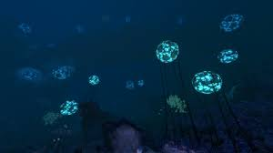Zona Algas de Sangre
La fosa se encuentra entre el camino de los caminantes marinos, las dunas, el arrecife disperso y la meseta herbácea, esta es muy estrecha con el espacio justo para que, entre el Cyclops, tiene varias cuevas que conectan con las cuevas del arrecife disperso. En la trinchera también se puede encontrar unos restos, estos están encajados entre las paredes, debajo hay una entrada a Rio perdido, esta entrada conecta con la sección denominada corredor , esta conecta con el campo de huesos, cañón fantasma y con la intersección La fosa se encuentra entre el camino de los caminantes marinos, las dunas, el arrecife disperso y la meseta herbácea, esta es muy estrecha con el espacio justo para que, entre el Cyclops, tiene varias cuevas que conectan con las cuevas del arrecife disperso.
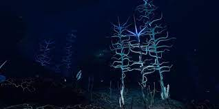Zona de Accidente
La zona de accidente es el lugar en el que la Aurora se estrella, esta hubicada al lado de el Crater, Debido al accidente de la Aurora esta zona fue contaminada con inmensas cantidades de radiacion, por el cual deberemos utilizar un traje antirradiacion para no morir, Esta zona es habitada por grandes depredadores de clase leviatan.En esta zona podremos encontrar fragmentos como el casco de Cyclops y en la Aurora planos del traje Prawn y diversos recursos que nos ayudaran en nuestra travesia
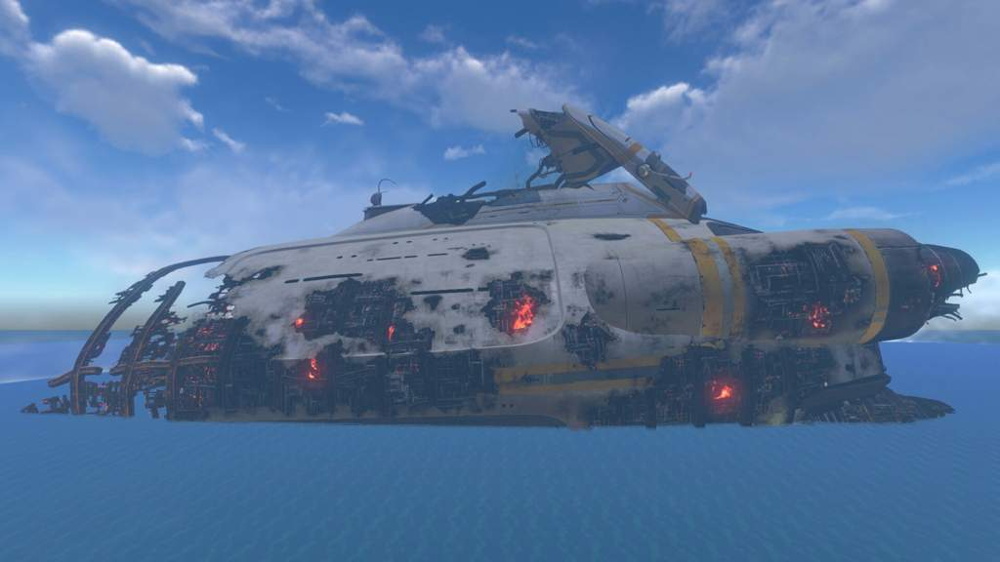Borde del Crater
El Borde del Crater es una zona que rodea a un cráter (obvio), en la que no hay recursos y en la que nos encontraremos a Leviatanes Fantasmas (Ghost Leviathans). Es la zona que sirve para marcar los límites del mapa.Hay un primer nivel que llega a los 3000 metros , y luego hay una bajada infinita. En cualquier caso, solo podemos llegar con el modo creativo, y una vez pasemos por debajo de los 8500 metros nos teletranspotará a la Capsula Salvavidas 5. Además, si traspasamos horizontalmente la zona durante 4000 metros, dejará de haber leviatanes, dejando así completamente vacío el mar. Se cree que este es el hogar natural de los Leviatanes Emperadores.
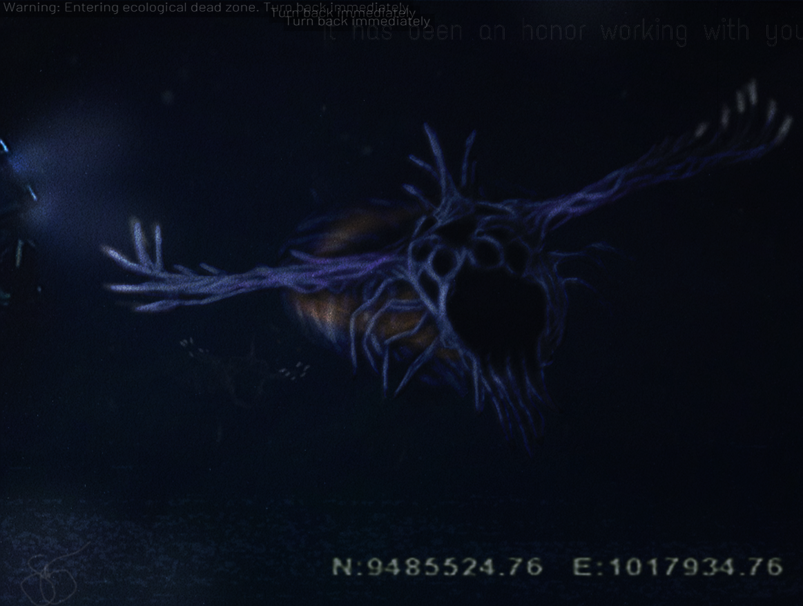Vehiculos
Seamoth
El Seamoth es una nave espacial y sumergible para una sola persona, pequeña y versátil, capaz de viajar de forma sostenida a widtha velocidad en distancias considerables. Cuenta con un sistema de propulsión omnidireccional que permite un movimiento lateral y vertical que aumenta gradualmente hasta un máximo de 11,25 m/s en cualquier dirección. La velocidad en cualquier dirección es independiente de otras direcciones y se puede sumar usando la suma de vectores. Así, si va hacia adelante y hacia arriba la velocidad máxima es de 15,91 m/s (11,25 * √2) y si va hacia adelante, hacia arriba y hacia los lados la velocidad máxima es de 19,49 m/s (11,25 * √3).
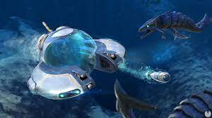Prawn Suit
El nano traje blindado resistente a la presión Mk.III (abbv. Prawn Suit Mk.III) es un andador mecánico bípedo, diseñado para su uso en entornos de extrema presión y gravedad cero. Un dosel reforzado con plastiacero de vidrio esmwidthado protege al único ocupante, y las extremidades hidráulicas proporcionan destreza y son capaces de golpear con suficiente fuerza para aplastar huesos y pulverizar rocas. Cuando no se utiliza fuera del agua, el vehículo asume una posición sentada.El movimiento lateral lo proporcionan unas patas mecánicas que impulsan el vehículo por el suelo a una velocidad máxima de 24 km / h. (14 Mph) y un par de impulsores en la parte trasera del vehículo proporcionan empuje vertical. El traje prawn también viene con su propia baliza, similar al Cyclops y el Seamoth. 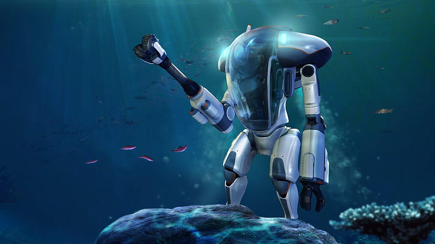
Cyclops
El Cyclops (también llamado Cíclope) es un gran submarino de unos 54.5 metros (179 pies) que es controlado por el jugador y es como una casa móvil. Tiene una velocidad de unos 14.4 nudos o 7.4 m/s (27 km/h).El Cyclops puede atracar al sumergible unipersonal Seamoth y al Traje Prawn, similar a la Piscina Lunar.La razón más lógica para que el Cyclops tenga una profundidad de colapso relativamente poco profunda es por la gran cúpula grande situada en el puente.La consola de la izquierda del volante está marcada con "widthERRA", similar al cuchillo de supervivencia muestra el título de la industria "widthERRA ARMS" (ARMAS widthERRA) widthERRA es también una corporación conocida en el juego Natural Selection 2, que también fue desarrollado por Unknown Worlds Entertainment.
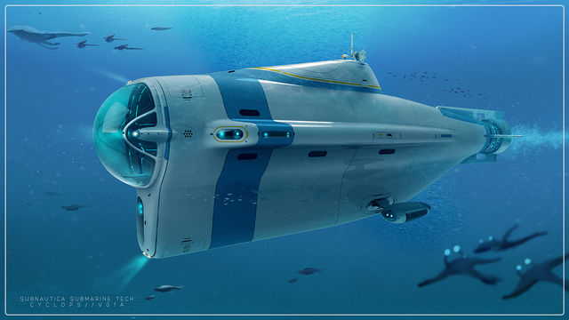Neptune Escape Rocket
El Cohete de Escape Neptuno es un vehículo que se utiliza para salir del Planeta 4546B. Consta de cinco partes construibles: la Plataforma de Lanzamiento Neptuno, el Pórtico Neptuno, los Impulsores de Iones Neptuno, la Reserva de Combustible Neptuno y la Cabina Neptuno. La Plataforma de Lanzamiento Neptuno puede construirse utilizando la Bahía de Vehículos Móviles, mientras que los otros cuatro componentes se construyen en la plataforma de lanzamiento. El jugador puede entrar en ella después de construir el Pórtico, los Impulsores y la Reserva de Combustible. El Cohete de Escape Neptuno no puede ser lanzado a menos que la Plataforma de Aplicación de la Cuarentena esté desactivada. Al intentar hacerlo, la PDA informará al jugador de que la base debe ser desactivada.
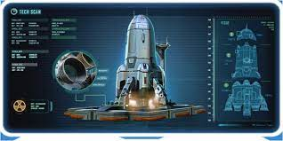Leviatanes
Portarrecifes Leviatán
Los portarrecifes son de un tamaño colosal, y recuerdan en cierta medida a los cefalópodos.
La mayor parte de su cuerpo consiste en un gigantesco caparazón como una montaña aplanada,
conectado a éste poseen su cuerpo principal caracterizado por sus numerosas glándulas
abultadas que brillan amarillas, y del que salen tres largos tentáculos. En la parte inferior
del caparazón hay dos grandes sifones por los que respira.La coloración del portarrecifes es
azul índigo por encima y turquesa por debajo, no obstante, los individuos adultos poseen
numerosas variedades de coral y plantas marinas creciendo sobre sus lomos, haciendo que
tengan parches de colores marrones, morados y celestes. Los individuos jóvenes son de menor
tamaño y carecen de flora creciendo sobre sus espaldas.
Evaluación: Alberga plantas, peces pequeños y percebes ricos en metales
Caminante Marino Leviatán
Los caminantes marinos viajan en grupos familiares, por lo que pueden verse a menudo individuos de diferentes tamaños, tratándose de adultos, jóvenes, y crías. Aunque son herbívoros, los adultos se mostrarán defensivos ante amenazas y protegerán a sus crías de intrusos utilizando sus largas patas y su boca para atacar, infligiendo 40 de daño con cada ataque.
Estos colosos pasan el tiempo removiendo el lecho marino en busca de plantas de las que alimentarse, y con sus pasos pueden desenterrar minerales valiosos. Ya que suelen acabar rápidamente con la flora del lugar, están constantemente migrando de una zona a otra, utilizando los Túneles de los Caminantes Marinos como vía.
Evaluación: Los rebaños de caminantes marinos pueden desenterrar depósitos minerales mientras revuelven la arena
Segador Leviatán
Los Segador Leviatanes emiten sonidos, que se pueden escuchar a grandes distancias. Según la entrada en el banco de datos, su rugido es una forma de eco-localización, aunque esta función no está en el juego.
También, parece rodear a su presa (o más frecuentemente al jugador) por unos momentos antes de atacar, y luego, atacar por la espalda de repente.
El Segador Leviatán a menudo nada por las profundidades pero no a ras del suelo. El jugador puede usar esto como ventaja y nadar por la superficie para evitar encontrarlo.
El Segador Leviatán no ataca a drones cámaras.
Si el Segador Leviatán logra atrapar al jugador, la criatura mantendrá a su victima en sus mandíbulas, pausará un momento para rugir y luego, procederá a sacar al jugador de su boca, matándolo instantáneamente.
Cuando el Segador Leviatán es dañado, retrocederá y rugirá después de recibir el daño.
Evaluación: Amenaza extrema- Evitar en todas las circunstancias.
Fantasma Leviatán Adulto
El leviatán fantasma (Ghost Leviathan en Inglés) es un Leviatán perteneciente a la categoría Fauna. Es la segunda criatura agresiva más grande de Subnautica y la tercera más grande del juego.
Existen seis Leviatanes Fantasmas en el mapa, sin tomar en cuenta los 3 encontrados en el Borde del Cráter: Tres jóvenes en el Río Perdido, dos adultos en el Gran Arrecife, y un adulto en la Zona de Algas de Sangre (Norte).
Si el jugador entra en el Borde del Cráter, un solo Leviatán Fantasma Adulto aparecerá. Si el jugador se mantiene en el Borde del Cráter por 30 segundos aparecerá un segundo Leviatán Fantasma Adulto. Y si el jugador permanece en el área por otros 30 segundos aparecerá el tercer y último Leviatán Fantasma Adulto. Perseguirán al jugador hasta que vuelva al área jugable, desapareciendo después.
Evaluación: Amenaza Extrema - Evadir el Borde del Cráter
Dragón Marino Leviatán
El Dragó Marino es una especie que llega a tener una longitud de 60 metros en estado juvenil y hasta 110 metros en estado adulto, tiene muchos parentescos fisicos con el Emperador Marino, esto muy posible debido a que provengan de un mismo ancestro.
Debido a su gran tamaño se alimentan de leviatanes mas pequeños o desafortunados de su misma especie. Normalmente para cazar salen de las cavernas de lava hacía la superficie, acorralando al desafortunado obligandolo a ir hasta las profundidades de su habitad, haciendo que muera hervido o deborado por el dragón, lo que ocurra primero.
esta bestia es pura piedra (Por así Decirlo) Esta recubierto de capas y capas de piel fundida que lo protegen del calor de las aguas donde habita.
Un Dragón Marino fue el responsable de que la bacteria Khaara se esparciera por el planeta, ya que destruyo el centro de investigación de enfermedades donde yacía cautivo su huevo, el cual los precursores habian tomado para experimentar e así intentar encontrar una cura.
Evaluación: Amenaza extrema: evitar en todas las circunstancias
Emperador Marino Leviatán
A pesar de su tamaño gigantesco, la dieta del emperador marino Leviatán consiste únicamente en microorganismos filtrados del agua, como las ballenas de barbas de la vida real. Se sugiere que en el pasado estas criaturas viajaban en pequeños rebaños, ocasionalmente saliendo a la superficie para darse un festín con los microorganismos en las aguas menos profundas. Cuando la Bacteria Kharaa fue liberada en el planeta, muchas criaturas murieron, destruyendo la fuente de alimento de la especie. El emperador marino Leviatán es capaz de hablar por telepatía, que utiliza para comunicarse con el jugador en varios lugares del mundo. Siempre que se comunica con el jugador, la pantalla se distorsiona de forma similar a cuando un Warper teletransporta al jugador, o un Mesmer hipnotiza al jugador. El Emperador del Mar Leviatán contactará primero con el jugador telepáticamente ya sea sesenta minutos después de intentar desactivar la Plataforma de Aplicación de Cuarentena o veinte minutos después de llegar al Centro de Investigación de Enfermedades (lo que ocurra primero). Contactará de nuevo con el jugador poco después de haber obtenido la Tabla Azul, y de nuevo al entrar en los Lagos de Lava. Continuará interactuando con el jugador al entrar en el Acuario, diciéndole lo que tiene que hacer para incubar los huevos. Después de que el jugador inserte un Cubo de Iones en el Dispositivo Incubador, el Emperador del Mar Leviatán le hablará al jugador, y se moverá al lado izquierdo del Arco Extraterrestre, y soplará la arena, descubriendo el Arco que el jugador puede usar para acceder al Arco fuera de la Plataforma de Aplicación de la Cuarentena.
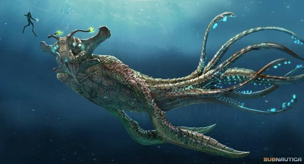Gargantuan Leviatan
Meteorocinesis; El gigantesco leviatán puede cambiar el clima y cambiar las corrientes oceánicas balanceando sus zarcillos y girando su cuerpo alargado.
Regeneración: el gigantesco leviatán puede generar sus heridas en cuestión de segundos. Esto se debe en parte a su mayor metabolismo.
Casi invulnerable: el gigantesco leviatán es inmune a la mayoría de los ataques convencionales gracias a su gran tamaño y resistente piel.
Naturaleza bioeléctrica: Posee varios órganos bioeléctricos a lo largo de su cuerpo que le permiten generar electricidad. Esto puede oscilar entre descargas nocivas y potentes pulsos electromagnéticos.
Telepatía: al igual que el Sea Emperor, parece que también puede comunicarse telepáticamente. Sin embargo, son mucho más provocativos.
Potente fuerza de mordida: Su fuerza de mordida es de 706556,61412 psi. El material más fuerte que puede destruir es la patella vulgata de lapa, también conocida como dientes de lapa, que es alrededor del octavo material más fuerte y el material biológico más fuerte. Su fuerza de mordida es 17 veces más fuerte que la del Megalodon, que tenía una mordida de 40.000 psi.
Velocidad sobrehumana: Su velocidad máxima es de alrededor de 80 millas por hora.
Agilidad mejorada: es capaz de nadar y girar bastante rápido azotando el agua.
Resistencia mejorada: puede tolerar una gran cantidad de presión, ya sea las profundidades del océano o los atacantes que se aproximan.
Resistencia mejorada: el gigantesco leviatán posee una cantidad casi ilimitada de resistencia y la criatura nunca se muestra realmente cansada o exhausta después de nadar durante largos períodos de tiempo.
Fuerza mejorada: los registros parecen sugerir que puede arrastrar presas que tienen aproximadamente su tamaño o más. Cualquier cosa más pequeña se aplastará casi al instante.
Combate mejorado: con todo lo mencionado anteriormente, el gigantesco leviatán puede dominar a casi cualquier otra criatura con facilidad.
Drenaje de energía: el gigantesco leviatán puede drenar la energía de los vehículos y usar esa energía como energía para su propio cuerpo.
Rugido de onda de choque: el rugido gigantesco de los leviatanes es extremadamente fuerte y provoca una onda hidrosónica de conmoción que puede infligir daños y hacer que las cosas retrocedan hasta 150 metros.
Evaluación: No hay nada que hacer, acepta tu destino